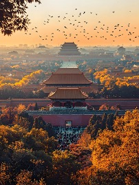

Le plus grand palais impérial de l’histoire chinoise

La Cité interdite est située au centre de Pékin et constitue l’un des symboles les plus importants du pouvoir impérial et de la civilisation chinoise ancienne. Sa construction a commencé en 1406 sous l’ordre de l’empereur Yongle de la dynastie Ming et a duré 14 ans. Le palais fut achevé en 1420.
De cette date jusqu’à la chute de la dynastie Qing en 1912, 24 empereurs y ont vécu et gouverné la Chine. Pendant plus de cinq siècles, la Cité interdite a été le centre politique, culturel et administratif de l’empire chinois.
Ce palais n’était pas seulement la résidence de l’empereur, mais aussi un symbole du pouvoir de l’État. De nombreux événements historiques importants y ont eu lieu, comme les cérémonies d’intronisation, les grandes cérémonies impériales et les audiences officielles.
La Cité interdite est aujourd’hui le plus grand et le mieux conservé des ensembles de palais anciens au monde. Le complexe couvre environ 720 000 mètres carrés et comprend plus de 9 000 bâtiments. Les murs rouges et les toits jaunes donnent au palais une apparence solennelle et majestueuse.
Chaque palais, chaque sculpture et chaque détail architectural témoignent du savoir-faire exceptionnel de l’architecture traditionnelle chinoise.
En 1987, la Cité interdite a été inscrite au patrimoine mondial de l’UNESCO et est aujourd’hui considérée comme un trésor de la civilisation humaine.
Réservation des billets :
Prix du billet :